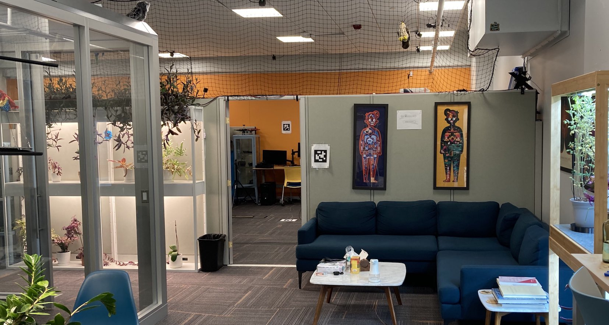
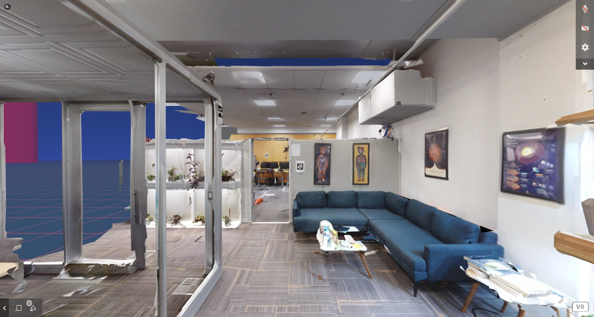
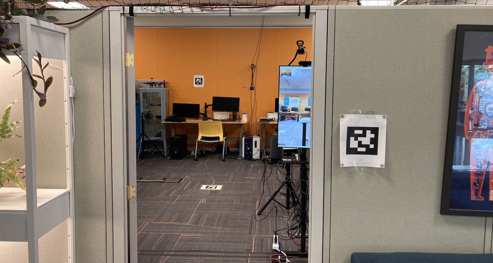
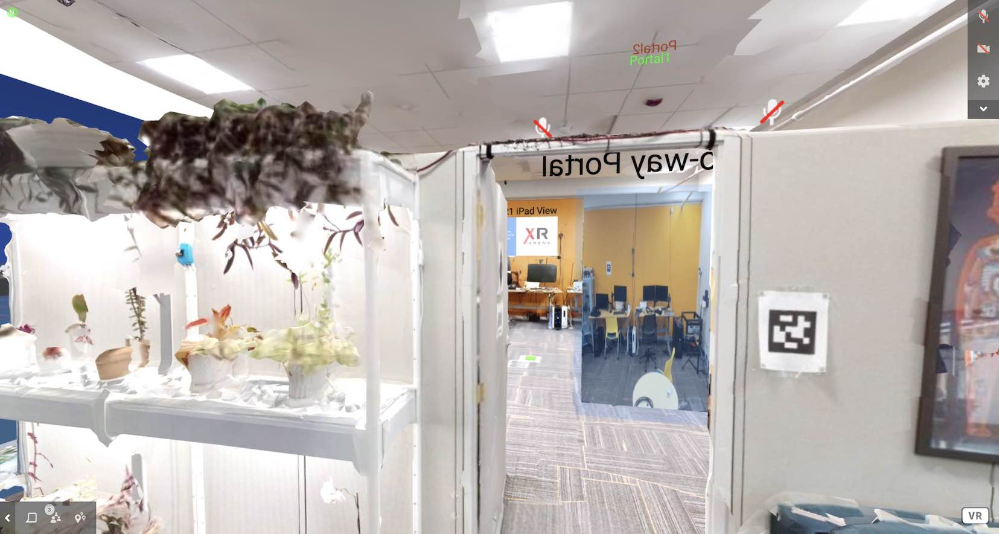
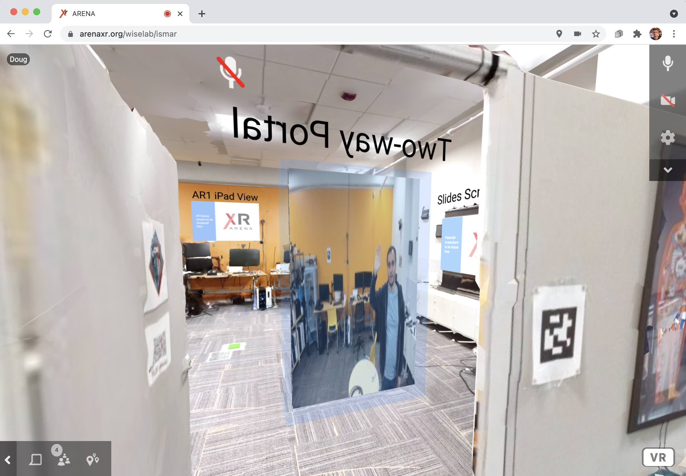

The Venue: Our Lab
We scanned our lab space to host the "conference venue." The figure shows the scanned model.

These are some side-to-side photos of the actual space and a similar VR view.
-

Photo of the venue space -

VR view of scanned space -

Photo of the venue space -

VR view of scanned space
Several in-person participants (named AR1, AR2, AR3, ...) will be using a mix of AR devices (iPads, phones, magic leap) and interact with remote participants through their devices. Say hi, or ask us a question!
We also have an AR/VR portal where remote participants can interact with in-person participants and see a glimpse into what is happening at the physical location. The portal is registered in the 3D scan, so the virtual and real-world geometry are aligned.
-

AR/VR Portal (VR View) -

AR/VR Portal Physical Setup -

Another Perspective of the AR/VR Portal